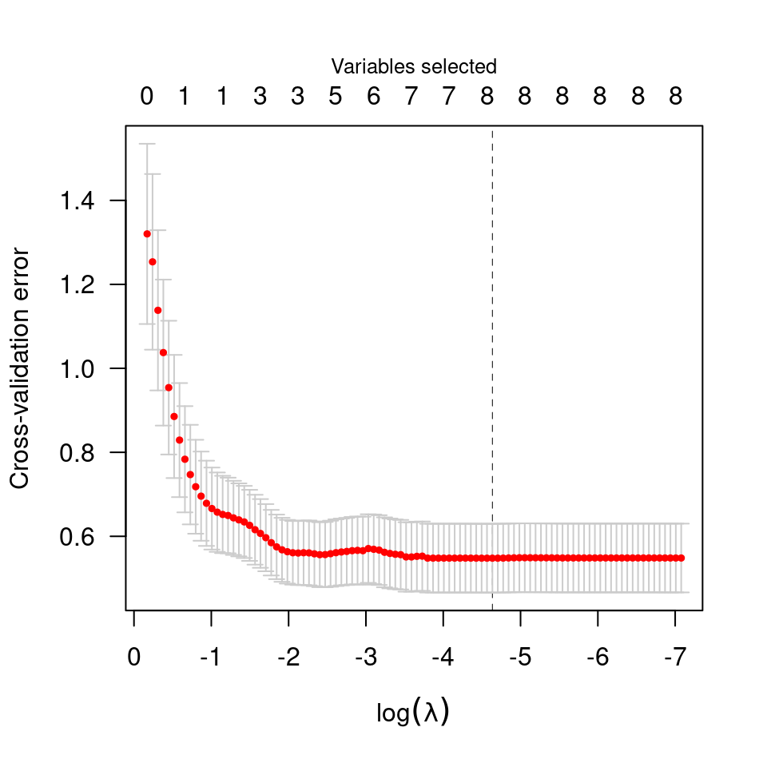
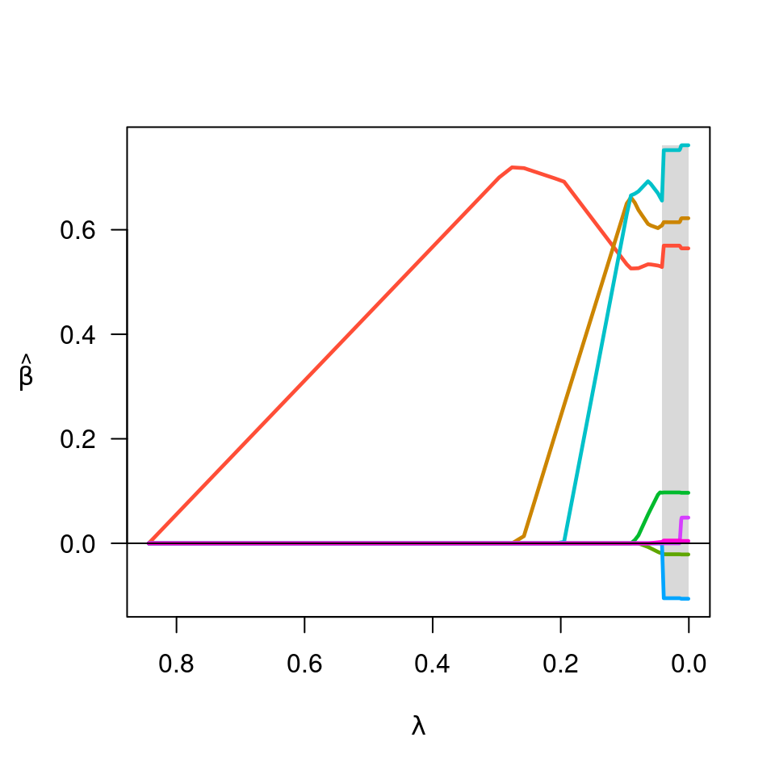
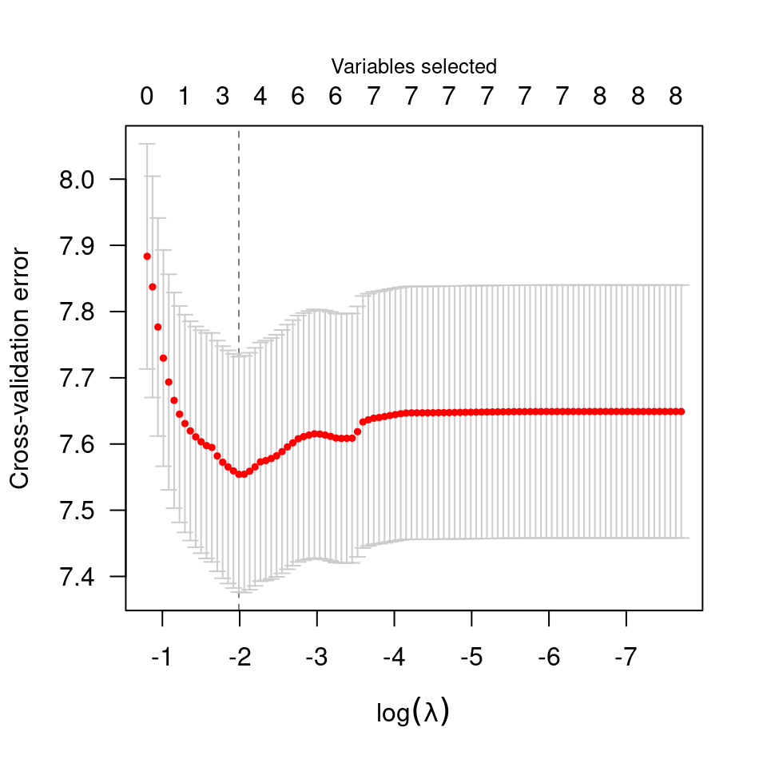
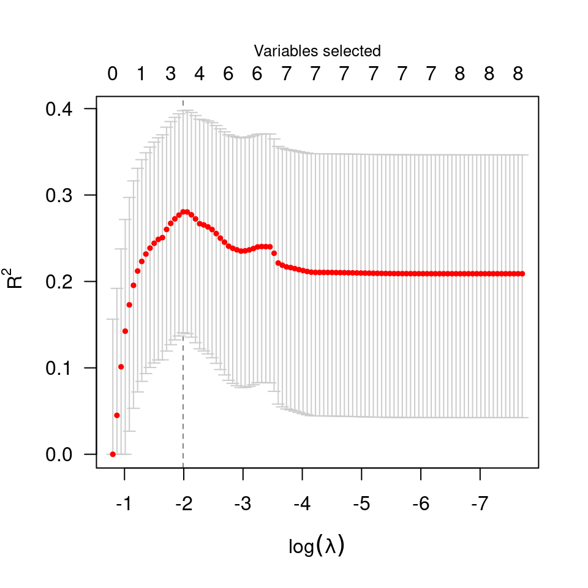

cv-ncvreg.RdPerforms k-fold cross validation for MCP- or SCAD-penalized regression models over a grid of values for the regularization parameter lambda.
cv.ncvreg(X, y, ..., cluster, nfolds=10, seed, fold, returnY=FALSE, trace=FALSE) cv.ncvsurv(X, y, ..., cluster, nfolds=10, seed, fold, se=c('quick', 'bootstrap'), returnY=FALSE, trace=FALSE)
| X | The design matrix, without an intercept, as in
|
|---|---|
| y | The response vector, as in |
| ... | Additional arguments to |
| cluster |
|
| nfolds | The number of cross-validation folds. Default is 10. |
| fold | Which fold each observation belongs to. By default the observations are randomly assigned. |
| seed | You may set the seed of the random number generator in order to obtain reproducible results. |
| returnY | Should |
| trace | If set to TRUE, inform the user of progress by announcing the beginning of each CV fold. Default is FALSE. |
| se | For |
The function calls ncvreg/ncvsurv nfolds times,
each time leaving out 1/nfolds of the data. The
cross-validation error is based on the deviance;
see
here for more details.
For family="binomial" models, the cross-validation fold
assignments are balanced across the 0/1 outcomes, so that each fold
has the same proportion of 0/1 outcomes (or as close to the same
proportion as it is possible to achieve if cases do not divide
evenly).
For Cox models, cv.ncvsurv uses the approach of calculating
the full Cox partial likelihood using the cross-validated set of
linear predictors. Other approaches to cross-validation for the Cox
regression model have been proposed in the literature; the strengths
and weaknesses of the various methods for penalized regression in the
Cox model are the subject of current research. A simple approximation
to the standard error is provided, although an option to bootstrap the
standard error (se='bootstrap') is also available.
An object with S3 class cv.ncvreg/cv.ncvsurv containing:
The error for each value of lambda, averaged
across the cross-validation folds.
The estimated standard error associated with each value
of for cve.
The fold assignments for cross-validation for each
observation; note that for cv.ncvsurv, these are in terms
of the ordered observations, not the original observations.
The sequence of regularization parameter values along which the cross-validation error was calculated.
The fitted ncvreg/ncvsurv object for the
whole data.
The index of lambda corresponding to
lambda.min.
The value of lambda with the minimum
cross-validation error.
The deviance for the intercept-only model. If you
have supplied your own lambda sequence, this quantity may
not be meaningful.
The estimated bias of the minimum cross-validation error, as in Tibshirani RJ and Tibshirani R (2009), "A Bias Correction for the Minimum Error Rate in Cross-Validation", Ann. Appl. Stat. 3:822-829.
If family="binomial", the cross-validation
prediction error for each value of lambda.
If returnY=TRUE, the matrix of cross-validated
fitted values (see above).
Breheny P and Huang J. (2011) Coordinate descentalgorithms for nonconvex penalized regression, with applications to biological feature selection. Annals of Applied Statistics, 5: 232-253. doi: 10.1214/10-AOAS388
Patrick Breheny; Grant Brown helped with the parallelization support

#> MCP-penalized linear regression with n=97, p=8 #> At minimum cross-validation error (lambda=0.0097): #> ------------------------------------------------- #> Nonzero coefficients: 8 #> Cross-validation error (deviance): 0.55 #> R-squared: 0.58 #> Signal-to-noise ratio: 1.41 #> Scale estimate (sigma): 0.740
beta <- fit$beta[,cvfit$min] ## requires loading the parallel package if (FALSE) { library(parallel) X <- Prostate$X y <- Prostate$y cl <- makeCluster(4) cvfit <- cv.ncvreg(X, y, cluster=cl, nfolds=length(y))} # Survival data(Lung) X <- Lung$X y <- Lung$y cvfit <- cv.ncvsurv(X, y) summary(cvfit)#> MCP-penalized Cox regression with n=137, p=8 #> At minimum cross-validation error (lambda=0.1368): #> ------------------------------------------------- #> Nonzero coefficients: 3 #> Cross-validation error (deviance): 7.55 #> R-squared: 0.28 #> Signal-to-noise ratio: 0.39
